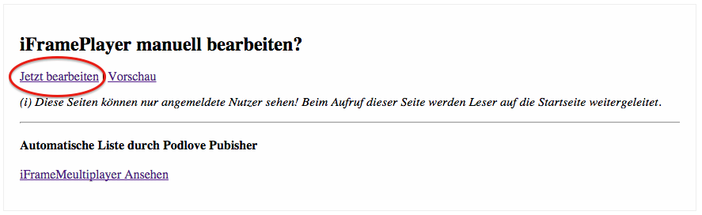
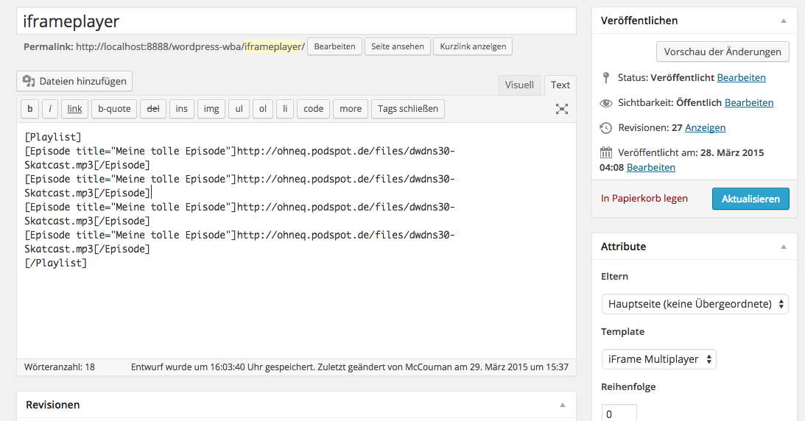

Pfad:
wordpress/wp-content/plugins/iFrameMultiplayer/template-iframeplayer.php
Pfad:
wordpress/wp-content/themes/<MeinThemename>/template-iframeplayer.php

1.) Lade dir das iFrameMultiplayer Paket herunter und über FTPs auf deinen Wordpress Blog, in den Plugin Bereich.
Pfad:
wordpress/wp-content/plugins/iFrameMultiplayer
2.) Aktiviere das Plugin im Dashboard.
3.) Kopiere Dir die Datei template-iframeplayer.php aus dem Paket und lade es in dein Themeordner.
Pfad:
wordpress/wp-content/plugins/iFrameMultiplayer/template-iframeplayer.php
Pfad:
wordpress/wp-content/themes/<MeinThemename>/template-iframeplayer.php
4a.) Erstelle eine neue "statische" Seite in deinem Blog. Gebe ihm einen Namen Bsp.: iframeplayer.
Achte darauf, das dort keine Leerzeichen im Namen enthalten sind.
Diese Seite erstellt für Dich später deinen Player den Du auf deinen Seiten einbinden kannst :)
4b.) Ändere unter Attribute das Template auf: iFrame Multiplayer
Einbinden des Players:
Um deinen iFrameMultiplayer ausgeben zu lassen, kannst Du folgenden Shortcode auf eine Seite anwenden:
[iFrameMultiplayer width="99" page="iframeplayer"]

Codes:
width="100" //definiert die Breite des iFrames auf deiner Seite.
page="iframeplayer" //definiert von wo der iFRamerPlayer abgefragt werden soll.
Eintragen einer neuen Episode:
Um eine neue Episode einzutragen gehe auf deine eingerichtete iFramePlayer Seite (Siehe 4.a iframeplayer):
und klicke auf "Jetzt bearbeiten".

Trage eine neue Episode wie folgt ein:
[Playlist]
[Episode title="Meine tolle Episode"]http://ohneq.podspot.de/files/dwdns30-Skatcast.mp3[/Episode]
[/Playlist]

Dein Player sieht nach dem Einbinden über einen Shortcode dann so aus:
Einbinden des Players:
Um deinen iFrameMultiplayer ausgeben zu lassen, kannst Du folgenden Shortcode auf eine statische Seite anwenden:
[iFrameMultiplayer width="100" page="iframeplayer" podlove="1"]
Codes:
width="100" //definiert die Breite des iFrames auf deiner Seite.
page="iframeplayer" //definiert von wo der iFRamerPlayer abgefragt werden soll.
podlove="1" //um automatisch alle Episoden auszulesen muss zwingend der Eintrag gesetzt werden.
Um die automatische Höhenerkennung des iFrames zu testen kann folgender Code verwendet werden:
[iFrameMultiplayer test="on"]